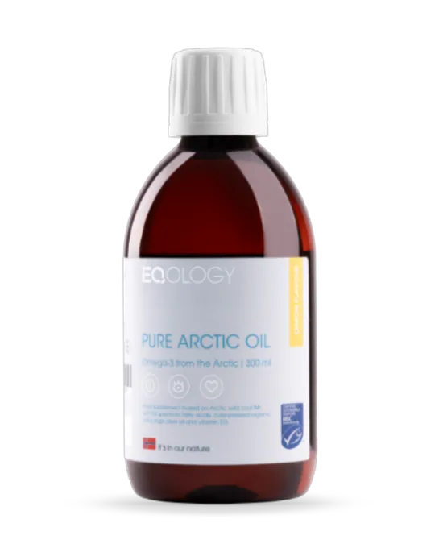

Nouveau • NoëlLes coffrets cadeaux
Nouveau • NoëlLes coffrets cadeaux
Les oméga‑3 de Norvège, mesurés chez vous.
Eqology est une marque norvégienne d'oméga‑3, créée en 1998. Ici, Yves Coignard vous aide à choisir. Vous commandez ensuite sur le site officiel d'Eqology, qui vous livre.
Paiement sécurisésur le site officiel d'Eqology
Livré chez vouspar Eqology, offert dès deux produits de plus de 60 €
Un conseil gratuitYves répond à vos questions, avant et après
Pêche durablecabillaud sauvage certifié MSC
Vous êtes sur le site d'un conseiller Eqology.
Eqology ne se vend pas en magasin : la marque passe par des distributeurs indépendants. Yves Coignard en fait partie. Il conseille ses clients en France et accompagne ceux qui veulent, à leur tour, recommander les produits.
Passer par lui ne coûte rien de plus : vous payez le prix de la boutique officielle Eqology, qui encaisse et livre.
Écrire à YvesEqology
La marque
- ✓ Fabrique et contrôle les produits
- ✓ Encaisse le paiement
- ✓ Livre chez vous
- ✓ Gère le service client
Yves
Le conseil
- → Vous aide à choisir
- → Vous explique le test
- → Lit le résultat avec vous
- → Vous rappelle si vous le souhaitez
Ce que vous trouverez dans la boutique.

Les huiles oméga‑3
Cabillaud sauvage de l'Arctique et huile d'olive, en flacon de verre. Il existe une version végane, à base d'algues.

Le test à domicile
Une goutte de sang, un laboratoire indépendant et un résultat en ligne pour savoir d'où vous partez.
Vitamines et beauté
Les vitamines K2 et D3, le Nordic Energy Booster et Ocean Miracle, une ligne de soins pour la peau.
Programmes et coffrets
L'huile et le test réunis sur plusieurs mois, et des coffrets prêts à offrir pour Noël.
Ce qu'Eqology fait autrement.

01
Une pêche qu'on peut suivre
Le cabillaud est pêché à l'état sauvage dans l'Arctique par des pêcheries certifiées MSC, le label de la pêche durable.
02
Une huile d'olive dans le flacon
Les oméga‑3 sont mélangés à de l'huile d'olive vierge extra de Crète, bio et pressée à froid, avec de la vitamine D3.
03
Un goût primé
Pure Arctic Oil a reçu le Superior Taste Award. Parfumée au citron ou à l'orange, elle se prend à la cuillère.
Trois étapes, chez vous.
1
Vous mesurez
Une piqûre au bout du doigt, une goutte sur un buvard, une enveloppe à poster. Le résultat arrive en ligne.
2
Vous complétez
Une cuillère d'huile chaque jour, choisie selon votre résultat. Yves vous aide à le lire.
3
Vous mesurez à nouveau
Quatre mois plus tard, le temps que les globules rouges se renouvellent, le second test montre le chemin parcouru.
Recommandez Eqology et touchez une commission.
Vos clients commandent chez Eqology avec votre lien, Eqology livre et vous verse une commission. Sans stock, à votre rythme, avec l'équipe d'Yves pour démarrer.
Comprendre le partenariatEst-ce le site officiel d'Eqology ?
Non. C'est le site d'Yves Coignard, distributeur indépendant Eqology en France. Quand vous commandez, vous passez sur la boutique officielle Eqology : c'est elle qui encaisse et qui livre.
Comment se passe une commande ?
Vous choisissez un produit ici, puis le bouton « Commander chez Eqology » vous mène à la boutique officielle. Paiement sécurisé, livraison à domicile. Le prix affiché par Eqology au moment de la commande fait foi.
Pourquoi commencer par le test ?
Pour savoir d'où vous partez. Le test indique votre rapport oméga-6 / oméga-3 ; un second test, quelques mois plus tard, montre ce qui a changé. Le test donne un repère et ne remplace pas l'avis de votre médecin.
Qui est Yves Coignard ?
Un distributeur indépendant Eqology. Il conseille ses clients, répond aux questions sur le test et accompagne les personnes qui veulent devenir partenaires.
Puis-je être conseillé avant d'acheter ?
Oui. Écrivez à Yves depuis la page contact : il vous répond, ou vous rappelle si vous laissez votre numéro.